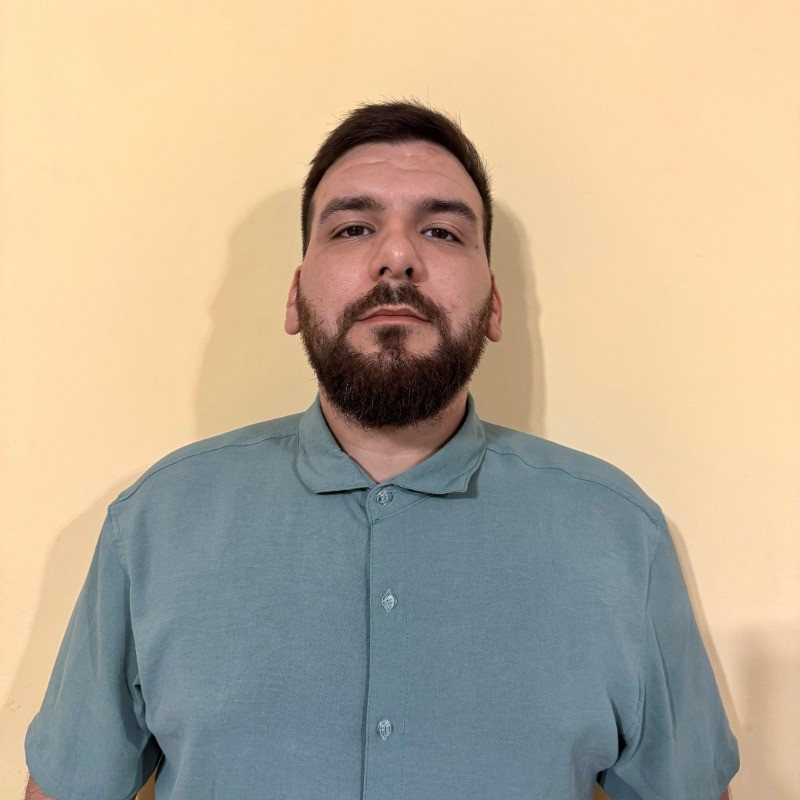

Profesional del área tecnológica con 8 años de sólida experiencia en gestión operativa, administración comercial y flujos de facturación, en transición hacia la ingeniería de software. Estudiante universitario activo de la Tecnicatura en Desarrollo Web (UNLaM), con conocimientos comprobables en el diseño desde cero, modelado conceptual/lógico (MER, DER) y optimización de bases de datos relacionales (MySQL). Experiencia práctica en la administración de herramientas comerciales y plataformas de facturación (ARCA). Perfil proactivo orientado al desarrollo backend, arquitecturas escalables y la aplicación de lógica polimórfica para la resolución de problemas de alto impacto en sistemas financieros y comerciales.